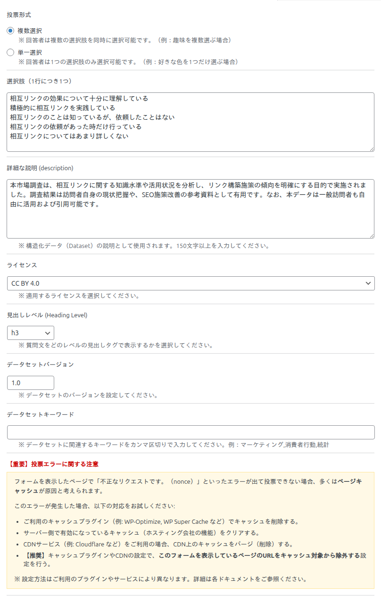
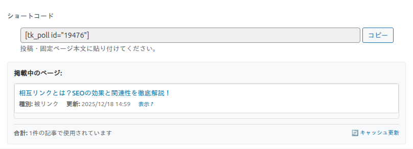
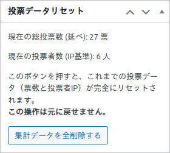

アンケートの作成
「データセット」→「新規追加」で開く編集画面には、投票の中身を決める「投票設定」メタボックスがあります。ここでは各項目の意味と、初心者がつまずきやすいポイントを一つずつ解説します。
質問文（タイトル）
編集画面の一番上のタイトル欄が、そのままアンケートの質問文になります。「あなたはSEO対策をしていますか？」のように、来訪者にそのまま見せる文章を入力してください。
投票設定メタボックスの全項目

投票形式
回答者の選び方を決めます。
- 複数選択（初期値）：回答者は複数の選択肢を同時に選べます。「あてはまるものをすべて選択」といった質問に向いています。フォームはチェックボックスで表示されます。
- 単一選択：回答者は1つの選択肢だけ選べます。「最も近いものを1つ選択」といった質問に向いています。フォームはラジオボタンで表示されます。
選択肢（1行につき1つ）
投票の選択肢を、1行に1つずつ入力します。改行で区切るだけで、そのまま選択肢になります。あとから選択肢を追加・削除・並べ替えしても、既存の得票数は選択肢のテキストを手がかりに、できるだけ引き継がれます。
選択肢の文言を大きく書き換えると、その選択肢は「別の選択肢」とみなされ、得票数がリセットされる場合があります。公開後の文言変更は慎重に行ってください。
詳細な説明（description）
このアンケート（データセット）が何を目的とした調査なのかを説明する文章です。ここに入力した内容は、構造化データ（Dataset）の description として出力され、Google データセット検索での説明文になります。
150文字以上の入力が必要です。150文字未満のまま保存しようとすると、保存が拒否されます。調査の目的・対象・活用方法などを具体的に書くと、構造化データとしての質も上がります。
ライセンス
公開するデータに適用するライセンスを選びます。クリエイティブ・コモンズを中心に、次の10種類から選択できます（初期値は CC BY 4.0）。
- CC BY 4.0（表示）
- CC BY-SA 4.0（表示 - 継承）
- CC BY-NC 4.0（表示 - 非営利）
- CC0 1.0（パブリックドメイン）
- CC BY-NC-SA 4.0 / CC BY-ND 4.0 / CC BY-NC-ND 4.0
- Public Domain Mark 1.0 / CC BY 3.0 / CC BY 2.0
選んだライセンスは、構造化データやダウンロードファイルのメタ情報に自動反映されます。
見出しレベル（Heading Level）
質問文を、フロント側でどの見出しタグ（h1〜h6）で出力するかを選びます（初期値は h3）。記事の見出し構造に合わせて選ぶと、アクセシビリティと SEO の両面で自然な階層になります。
データセットバージョン
データセットの版数を入力します（初期値は 1.0）。調査をやり直したり選択肢を大きく変えたりしたときに更新すると、構造化データの version に反映されます。
データセットキーワード
データセットに関連するキーワードをカンマ区切りで入力します（例：マーケティング,消費者行動,統計）。構造化データの keywords に反映され、検索での発見性を高めます。
ショートコードと掲載中ページ
公開後、投票設定メタボックスの下部にショートコードが表示されます。「コピー」ボタンでコピーして、記事や固定ページに貼り付けてください。

「掲載中のページ」には、このアンケートのショートコードを実際に使っている記事が自動で一覧表示されます。どの記事に貼ったか分からなくなったときに便利です。表示が古い場合は「キャッシュ更新」で最新化できます。
投票データのリセット
編集画面のサイドに「投票データリセット」ボックスがあります。ここでは、現在の総投票数（延べ）と投票者数（IP 基準）を確認できます。

「集計データを全削除する」を押すと、このアンケートの得票数と投票者記録が完全に消去されます（元に戻せません）。テスト投票を消したいときなどに使ってください。なお、全アンケート共通で「もう一度みんなに投票してもらう」だけなら、削除ではなく基本設定ページの「投票制限の解除」が使えます（基本設定ガイド参照）。